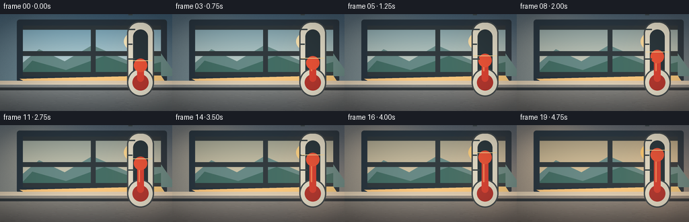
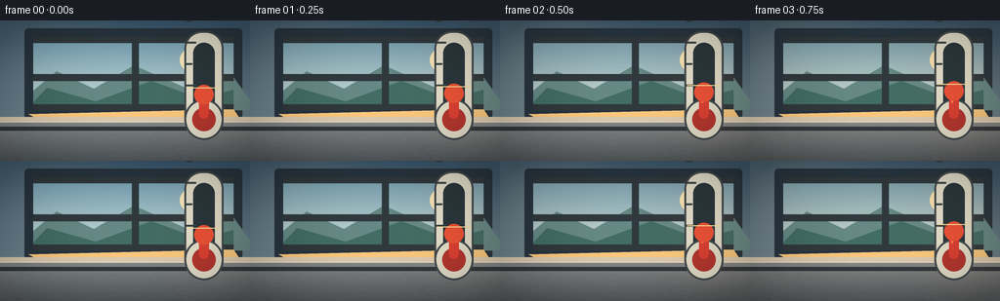
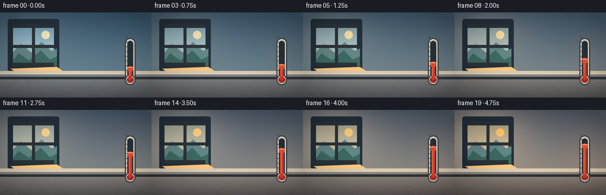
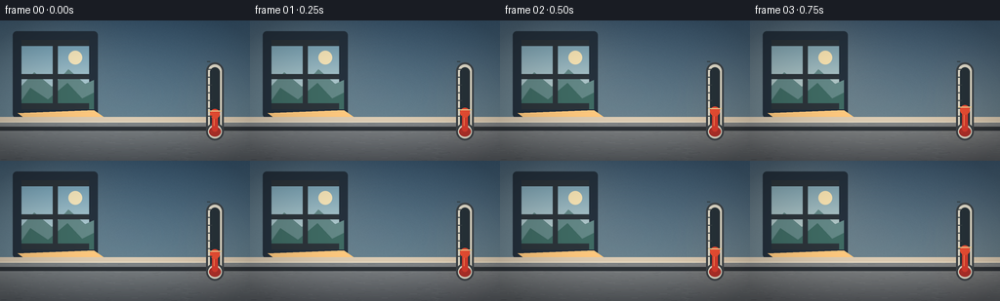
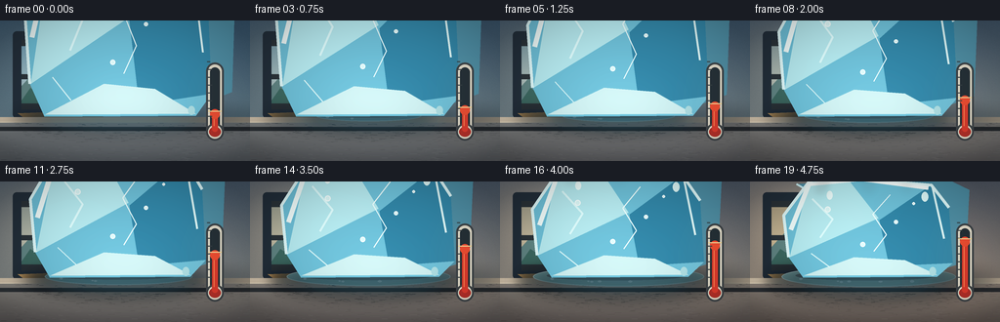
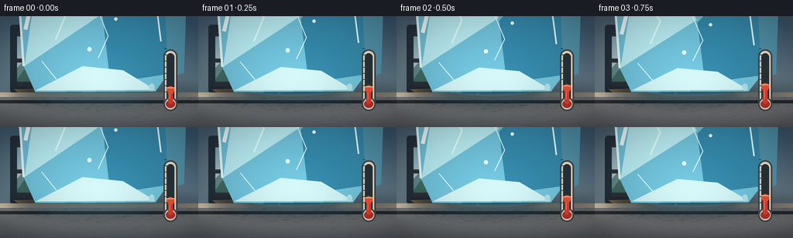
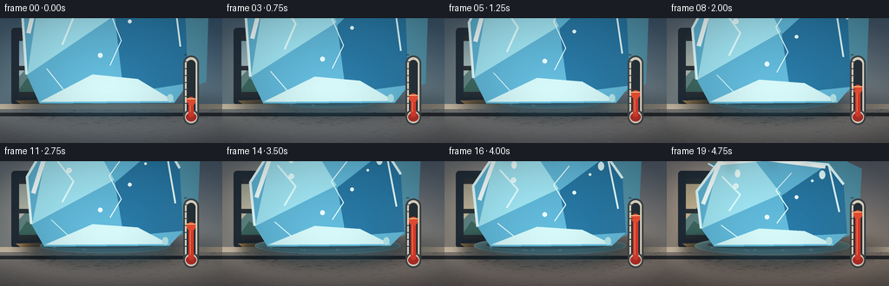
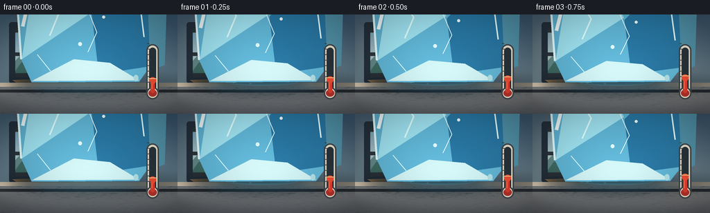
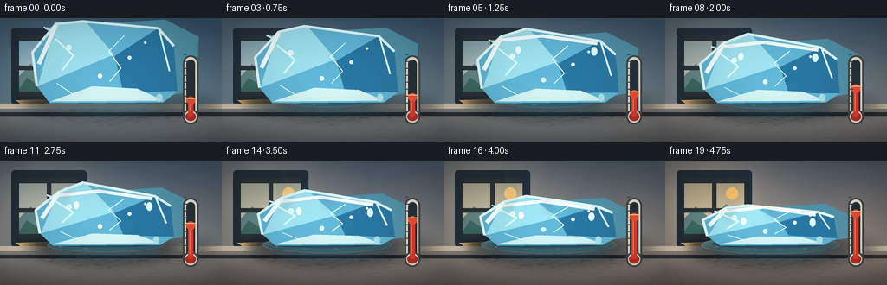
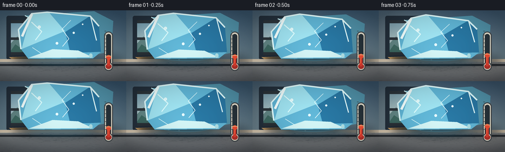

CODING AGENTS AS PIXEL WORLD MODELS
traex/DeepSeek-V4.1-Flash · phygen_096
点击播放 · 原生 RGB 像素
此结果可播放，但该运行尚未通过最终提交审核。页面展示不代表评测通过。
逐轮保存的候选
回放视频、检查图与代码变化。
每份候选均可单独播放。实际图片检查记录在下方工具轨迹中。
候选 01播放与检查图
点击播放 · 原生 RGB 像素

展开代码变化
--- 上一保存版本
+++ 本次保存版本
@@ -0,0 +1,409 @@
+"""Procedural timelapse: a faceted ice block melting as the room warms."""
+
+from pathlib import Path
+import math
+
+import numpy as np
+from PIL import Image, ImageDraw, ImageFilter
+
+import artifact_io
+
+
+CASE_DIR = Path(__file__).resolve().parent
+W, H = 256, 144
+N, FPS = 20, 4
+SS = 4
+RW, RH = W * SS, H * SS
+
+
+def clamp(value, lo=0.0, hi=1.0):
+ return max(lo, min(hi, value))
+
+
+def mix(a, b, t):
+ return tuple(int(round(a[i] + (b[i] - a[i]) * t)) for i in range(3))
+
+
+def smoothstep(edge0, edge1, x):
+ x = clamp((x - edge0) / (edge1 - edge0))
+ return x * x * (3.0 - 2.0 * x)
+
+
+def rgba(color, alpha=255):
+ return (*color[:3], int(alpha))
+
+
+def add_glow(base, mask, color, strength):
+ """Add a blurred colored light using a grayscale mask."""
+ glow = np.asarray(mask.filter(ImageFilter.GaussianBlur(18 * SS)), dtype=np.float32) / 255.0
+ arr = np.asarray(base, dtype=np.float32)
+ if arr.shape[2] == 4:
+ arr[..., :3] += glow[..., None] * np.asarray(color, dtype=np.float32) * strength
+ else:
+ arr += glow[..., None] * np.asarray(color, dtype=np.float32) * strength
+ return Image.fromarray(np.clip(arr, 0, 255).astype(np.uint8), base.mode)
+
+
+def background(t):
+ y = np.broadcast_to(np.linspace(0.0, 1.0, RH, dtype=np.float32)[:, None, None], (RH, RW, 1))
+ x = np.broadcast_to(np.linspace(0.0, 1.0, RW, dtype=np.float32)[None, :, None], (RH, RW, 1))
+
+ cool_top = np.array([57, 86, 108], dtype=np.float32)
+ cool_bottom = np.array([121, 148, 157], dtype=np.float32)
+ warm_top = np.array([87, 94, 104], dtype=np.float32)
+ warm_bottom = np.array([171, 156, 137], dtype=np.float32)
+ top = cool_top * (1 - t) + warm_top * t
+ bottom = cool_bottom * (1 - t) + warm_bottom * t
+ wall = top[None, None, :] * (1 - y) + bottom[None, None, :] * y
+
+ # A soft pool of daylight enters from the upper left.
+ beam = np.exp(-((x - 0.18) ** 2 / 0.075 + (y - 0.25) ** 2 / 0.16))
+ warm = np.array([245, 188, 112], dtype=np.float32) * (0.08 + 0.18 * t)
+ wall += beam * warm[None, None, :]
+
+ # Fine plaster grain keeps the broad wall from looking synthetic.
+ rng = np.random.default_rng(96)
+ grain = rng.normal(0.0, 2.1, (RH, RW, 1)).astype(np.float32)
+ wall += grain
+ return Image.fromarray(np.clip(wall, 0, 255).astype(np.uint8), "RGB")
+
+
+def draw_window(image, t):
+ d = ImageDraw.Draw(image, "RGBA")
+ x0, y0, x1, y1 = 34 * SS, 17 * SS, 239 * SS, 92 * SS
+ # Window surround and recessed frame.
+ d.rounded_rectangle((x0 - 9 * SS, y0 - 9 * SS, x1 + 9 * SS, y1 + 9 * SS),
+ radius=4 * SS, fill=(39, 51, 61, 255))
+ sky_top = mix((116, 161, 181), (204, 158, 101), 0.62 * t)
+ sky_bottom = mix((202, 221, 218), (255, 207, 143), 0.65 * t)
+ for yy in range(y0, y1):
+ u = (yy - y0) / (y1 - y0)
+ d.line((x0, yy, x1, yy), fill=rgba(mix(sky_top, sky_bottom, u), 255))
+
+ # Distant, deliberately soft landscape outside.
+ d.polygon([(x0, 72 * SS), (58 * SS, 52 * SS), (96 * SS, 70 * SS),
+ (137 * SS, 46 * SS), (190 * SS, 69 * SS), (239 * SS, 58 * SS),
+ (263 * SS, y1), (x0, y1)], fill=(101, 137, 134, 225))
+ d.polygon([(x0, 84 * SS), (48 * SS, 69 * SS), (98 * SS, 83 * SS),
+ (155 * SS, 62 * SS), (205 * SS, 80 * SS), (239 * SS, 71 * SS),
+ (239 * SS, y1), (x0, y1)], fill=(65, 108, 99, 230))
+ d.ellipse((184 * SS, 27 * SS, 216 * SS, 54 * SS), fill=rgba(mix((247, 232, 188), (255, 199, 111), t), 235))
+
+ # Mullions.
+ frame = (47, 55, 59, 255)
+ d.rectangle((x0 + 101 * SS, y0, x0 + 108 * SS, y1), fill=frame)
+ d.rectangle((x0, y0 + 38 * SS, x1, y0 + 45 * SS), fill=frame)
+ d.rectangle((x0, y0, x1, y0 + 6 * SS), fill=frame)
+ d.rectangle((x0, y1 - 6 * SS, x1, y1), fill=frame)
+
+ # Sun patch crossing the sill.
+ d.polygon([(29 * SS, 96 * SS), (239 * SS, 91 * SS), (247 * SS, 103 * SS),
+ (55 * SS, 110 * SS)], fill=(255, 202, 127, int(30 + 35 * t)))
+ return image
+
+
+def draw_counter(image, t):
+ d = ImageDraw.Draw(image, "RGBA")
+ counter_y = 99 * SS
+ top_color = mix((138, 143, 143), (172, 151, 128), 0.55 * t)
+ bottom_color = mix((84, 89, 92), (109, 89, 76), 0.55 * t)
+ for yy in range(counter_y, RH):
+ u = (yy - counter_y) / (RH - counter_y)
+ d.line((0, yy, RW, yy), fill=rgba(mix(top_color, bottom_color, u), 255))
+
+ # Stone flecks and long, subtle countertop grain.
+ rng = np.random.default_rng(410)
+ for _ in range(520):
+ xx = int(rng.integers(0, RW))
+ yy = int(rng.integers(counter_y + 2 * SS, RH))
+ length = int(rng.integers(1, 8) * SS)
+ shade = int(rng.integers(-17, 18))
+ base = np.array(mix(top_color, bottom_color, (yy - counter_y) / (RH - counter_y)))
+ c = tuple(np.clip(base + shade, 0, 255).astype(int))
+ d.line((xx, yy, min(RW, xx + length), yy + int(rng.integers(-1, 2))), fill=rgba(c, 65))
+
+ # Bright countertop edge and dark front lip.
+ d.rectangle((0, counter_y, RW, counter_y + 5 * SS), fill=(221, 205, 179, 120))
+ d.rectangle((0, 109 * SS, RW, 113 * SS), fill=(49, 54, 57, 115))
+ d.line((0, counter_y + 5 * SS, RW, counter_y + 5 * SS), fill=(238, 225, 198, 100), width=SS)
+ return image
+
+
+def ice_geometry(t):
+ melt = t ** 0.88
+ cx = 486 * SS
+ base_y = 382 * SS
+ width = (191 - 22 * melt) * SS
+ height = (170 - 92 * melt) * SS
+ left = cx - width / 2
+ right = cx + width / 2
+ top = base_y - height
+ # Subtle asymmetric slumping makes the melt feel physical.
+ return cx, base_y, width, height, left, right, top, melt
+
+
+def draw_puddle(image, t):
+ if t < 0.04:
+ return image
+ d = ImageDraw.Draw(image, "RGBA")
+ cx, base_y, width, height, *_ = ice_geometry(t)
+ grow = smoothstep(0.02, 1.0, t)
+ pw = width * (0.62 + 0.73 * grow)
+ ph = (17 + 17 * grow) * SS
+ py = base_y + 2 * SS
+
+ shadow = Image.new("RGBA", image.size, (0, 0, 0, 0))
+ sd = ImageDraw.Draw(shadow)
+ sd.ellipse((cx - pw * 0.59, py - ph * 0.9, cx + pw * 0.59, py + ph * 1.35),
+ fill=(28, 41, 46, 78))
+ shadow = shadow.filter(ImageFilter.GaussianBlur(6 * SS))
+ image.alpha_composite(shadow)
+
+ d = ImageDraw.Draw(image, "RGBA")
+ puddle_color = mix((104, 161, 173), (130, 174, 172), t)
+ d.ellipse((cx - pw / 2, py - ph / 2, cx + pw / 2, py + ph / 2),
+ fill=rgba(puddle_color, 112), outline=rgba((202, 235, 232), 82), width=SS)
+ d.ellipse((cx - pw * 0.42, py - ph * 0.29, cx + pw * 0.39, py + ph * 0.19),
+ fill=(218, 245, 239, 28))
+
+ # A few expanding ripple arcs suggest continuing melt.
+ for i, phase in enumerate((0.15, 0.55)):
+ local = clamp((t - phase) / (1 - phase))
+ if local <= 0:
+ continue
+ rr = (pw * (0.17 + 0.29 * local)) / 2
+ ry = ph * (0.18 + 0.28 * local) / 2
+ box = (cx - rr, py - ry, cx + rr, py + ry)
+ d.arc(box, 190, 345, fill=(225, 250, 246, int(100 * (1 - local))), width=SS)
+
+ # Scattered melt droplets.
+ rng = np.random.default_rng(67)
+ count = int(2 + 7 * grow)
+ for _ in range(count):
+ ang = rng.uniform(0, math.tau)
+ radius = rng.uniform(0.43, 0.61)
+ dx = math.cos(ang) * pw * radius
+ dy = math.sin(ang) * ph * radius * 0.5
+ rr = rng.uniform(1.0, 2.4) * SS
+ d.ellipse((cx + dx - rr, py + dy - rr * 0.55, cx + dx + rr, py + dy + rr * 0.55),
+ fill=(188, 226, 230, 100))
+ return image
+
+
+def draw_ice(image, t):
+ cx, base_y, width, height, left, right, top, melt = ice_geometry(t)
+ d = ImageDraw.Draw(image, "RGBA")
+
+ # Contact shadow and a cool translucent cast shadow.
+ shadow = Image.new("RGBA", image.size, (0, 0, 0, 0))
+ sd = ImageDraw.Draw(shadow)
+ sd.ellipse((left - 14 * SS, base_y - 9 * SS, right + 48 * SS, base_y + 20 * SS),
+ fill=(19, 38, 49, 105))
+ shadow = shadow.filter(ImageFilter.GaussianBlur(8 * SS))
+ image.alpha_composite(shadow)
+ d = ImageDraw.Draw(image, "RGBA")
+
+ # Back/right face, visible as a darker plane behind the front.
+ shift_x, shift_y = (26 - 8 * melt) * SS, (18 - 5 * melt) * SS
+ back = [
+ (left + 11 * SS, top + 7 * SS),
+ (right - 13 * SS, top - 2 * SS),
+ (right + shift_x, top + shift_y),
+ (right + shift_x - 4 * SS, base_y - height * 0.13),
+ (right - 9 * SS, base_y - height * 0.06),
+ ]
+ d.polygon(back, fill=(82, 147, 168, 174))
+ d.line([back[-1], back[0]], fill=(210, 246, 248, 130), width=2 * SS)
+
+ # Main faceted body. The irregular crown lowers and rounds during melting.
+ crown = 8 * SS * math.sin(t * math.pi)
+ front = [
+ (left + 3 * SS, base_y - height * 0.18),
+ (left - 2 * SS, top + height * 0.39),
+ (left + 25 * SS, top + 3 * SS),
+ (cx - 26 * SS, top - crown),
+ (right - 21 * SS, top + 8 * SS),
+ (right - 3 * SS, top + height * 0.31),
+ (right + 1 * SS, base_y - height * 0.12),
+ (right - 15 * SS, base_y + 2 * SS),
+ (left + 18 * SS, base_y + 3 * SS),
+ ]
+ d.polygon(front, fill=(132, 199, 214, 178))
+
+ # Broad inner planes give the ice volume without hiding its transparency.
+ d.polygon([(left + 24 * SS, top + 4 * SS), (cx - 23 * SS, top - crown),
+ (cx + 10 * SS, top + height * 0.42), (left + 4 * SS, base_y - height * 0.18)],
+ fill=(186, 232, 235, 94))
+ d.polygon([(right - 21 * SS, top + 8 * SS), (right - 3 * SS, top + height * 0.31),
+ (right + 1 * SS, base_y - height * 0.12), (cx + 21 * SS, base_y - 9 * SS),
+ (cx + 11 * SS, top + height * 0.44)],
+ fill=(68, 140, 165, 88))
+ d.polygon([(left + 18 * SS, base_y + 1 * SS), (right - 15 * SS, base_y),
+ (cx + 37 * SS, base_y - height * 0.15),
+ (cx - 15 * SS, base_y - height * 0.18)],
+ fill=(207, 239, 238, 65))
+
+ # Bright bevels and the cool rim light.
+ outline = [(left + 3 * SS, base_y - height * 0.18),
+ (left - 2 * SS, top + height * 0.39),
+ (left + 25 * SS, top + 3 * SS),
+ (cx - 26 * SS, top - crown),
+ (right - 21 * SS, top + 8 * SS),
+ (right - 3 * SS, top + height * 0.31)]
+ d.line(outline, fill=(226, 252, 251, 195), width=3 * SS, joint="curve")
+ d.line((left + 25 * SS, top + 4 * SS, left + 5 * SS, top + height * 0.54),
+ fill=(243, 255, 252, 175), width=5 * SS)
+ d.line((right - 20 * SS, top + 10 * SS, right - 8 * SS, top + height * 0.63),
+ fill=(229, 253, 251, 95), width=2 * SS)
+
+ # Internal fractures and trapped bubbles.
+ crack_alpha = int(96 + 28 * melt)
+ d.line([(cx - 58 * SS, top + height * 0.22), (cx - 37 * SS, top + height * 0.43),
+ (cx - 50 * SS, top + height * 0.62)], fill=(223, 253, 252, crack_alpha),
+ width=2 * SS, joint="curve")
+ d.line([(cx + 22 * SS, top + height * 0.18), (cx + 4 * SS, top + height * 0.38),
+ (cx + 18 * SS, top + height * 0.59), (cx + 5 * SS, top + height * 0.76)],
+ fill=(239, 255, 253, 76), width=SS, joint="curve")
+ d.line([(left + 26 * SS, base_y - height * 0.22), (left + 45 * SS, base_y - height * 0.08)],
+ fill=(225, 250, 248, 60), width=SS)
+ bubbles = [(cx - 42 * SS, top + height * 0.33, 3.0),
+ (cx + 28 * SS, top + height * 0.46, 2.1),
+ (cx - 6 * SS, top + height * 0.69, 2.7),
+ (cx + 46 * SS, top + height * 0.27, 1.5)]
+ for bx, by, br in bubbles:
+ r = br * SS
+ d.ellipse((bx - r, by - r, bx + r, by + r),
+ fill=(221, 249, 247, 80), outline=(245, 255, 253, 120), width=SS)
+
+ # Water sheen and droplets appear as the crown collapses.
+ if melt > 0.28:
+ alpha = int(110 * smoothstep(0.28, 0.82, melt))
+ d.line([(left + 25 * SS, top + 7 * SS), (cx - 8 * SS, top + 2 * SS),
+ (right - 24 * SS, top + 11 * SS)],
+ fill=(247, 255, 252, alpha), width=4 * SS, joint="curve")
+ d.ellipse((right - 31 * SS, top + 15 * SS, right - 24 * SS, top + 25 * SS),
+ fill=(224, 250, 248, alpha))
+ d.ellipse((left + 42 * SS, top + 14 * SS, left + 48 * SS, top + 23 * SS),
+ fill=(239, 255, 252, alpha))
+
+ # Small runoff bead at the base.
+ d.ellipse((right - 23 * SS, base_y - 8 * SS, right - 16 * SS, base_y + 1 * SS),
+ fill=(174, 222, 226, 155))
+ return image
+
+
+def draw_thermometer(image, t):
+ d = ImageDraw.Draw(image, "RGBA")
+ x = 835
+ top_y = 83
+ bulb_y = 322
+
+ # Warm ambient halo grows with the temperature.
+ halo = Image.new("L", image.size, 0)
+ hd = ImageDraw.Draw(halo)
+ hd.ellipse((x - 35 * SS, top_y - 15 * SS, x + 55 * SS, bulb_y + 55 * SS),
+ fill=int(35 + 42 * t))
+ image = add_glow(image, halo, (234, 115, 55), 0.23)
+ d = ImageDraw.Draw(image, "RGBA")
+
+ # Ivory housing with a dark inner channel.
+ d.rounded_rectangle((x - 20 * SS, top_y - 10 * SS, x + 20 * SS, bulb_y + 38 * SS),
+ radius=18 * SS, fill=(231, 225, 205, 242),
+ outline=(67, 73, 75, 255), width=2 * SS)
+ d.rounded_rectangle((x - 11 * SS, top_y + 2 * SS, x + 11 * SS, bulb_y + 17 * SS),
+ radius=11 * SS, fill=(42, 53, 58, 255))
+ d.ellipse((x - 20 * SS, bulb_y, x + 20 * SS, bulb_y + 42 * SS),
+ fill=(231, 225, 205, 255), outline=(67, 73, 75, 255), width=2 * SS)
+ d.ellipse((x - 12 * SS, bulb_y + 9 * SS, x + 12 * SS, bulb_y + 33 * SS),
+ fill=(185, 53, 44, 255))
+
+ temp = 0.24 + 0.67 * (0.55 * t + 0.45 * smoothstep(0.0, 1.0, t))
+ liquid_top = bulb_y - (bulb_y - top_y - 12 * SS) * temp
+ d.rounded_rectangle((x - 5 * SS, liquid_top, x + 5 * SS, bulb_y + 20 * SS),
+ radius=5 * SS, fill=(226, 64, 48, 255))
+ d.line((x - 2 * SS, liquid_top + 7 * SS, x - 2 * SS, bulb_y + 4 * SS),
+ fill=(255, 133, 83, 210), width=2 * SS)
+ d.ellipse((x - 10 * SS, liquid_top - 3 * SS, x + 10 * SS, liquid_top + 17 * SS),
+ fill=(242, 82, 53, 255))
+
+ # Tick marks communicate a rising reading without adding text.
+ for i in range(9):
+ ty = bulb_y - 14 * SS - i * 22 * SS
+ tick_len = 10 * SS if i % 2 == 0 else 6 * SS
+ d.line((x - 18 * SS, ty, x - 18 * SS + tick_len, ty),
+ fill=(58, 67, 69, 235), width=2 * SS)
+ d.line((x - 17 * SS, liquid_top, x + 17 * SS, liquid_top),
+ fill=(255, 224, 157, 180), width=SS)
+ return image
+
+
+def draw_steam(image, t):
+ if t < 0.34:
+ return image
+ strength = smoothstep(0.34, 0.78, t)
+ layer = Image.new("RGBA", image.size, (0, 0, 0, 0))
+ d = ImageDraw.Draw(layer, "RGBA")
+ cx, base_y, width, height, left, right, top, _ = ice_geometry(t)
+ for band in range(3):
+ points = []
+ for i in range(16):
+ u = i / 15
+ yy = top + 15 * SS - u * (55 + band * 13) * SS
+ drift = (u * u) * (7 + band * 4 + 4 * math.sin(t * 8 + band)) * SS
+ xx = cx - 50 * SS + band * 47 * SS + drift + math.sin(u * 5 + band * 2.1) * 5 * SS
+ points.append((xx, yy))
+ d.line(points, fill=(235, 246, 239, int(40 * strength * (1 - band * 0.19))),
+ width=(5 - band) * SS, joint="curve")
+ layer = layer.filter(ImageFilter.GaussianBlur(4 * SS))
+ image.alpha_composite(layer)
+ return image
+
+
+def warm_grade(image, t):
+ arr = np.asarray(image, dtype=np.float32)
+ # Gentle split tone: cooler shadows and amber highlights.
+ lum = arr.mean(axis=2, keepdims=True) / 255.0
+ warm = np.array([245, 189, 128], dtype=np.float32)
+ cool = np.array([72, 120, 147], dtype=np.float32)
+ shadow_weight = (1 - lum) * (0.035 + 0.025 * t)
+ light_weight = lum * (0.018 + 0.065 * t)
+ arr = arr * (1 - shadow_weight - light_weight) + cool * shadow_weight + warm * light_weight
+
+ # Subtle vignette keeps focus on the ice.
+ yy, xx = np.mgrid[0:RH, 0:RW].astype(np.float32)
+ nx = (xx - RW * 0.5) / (RW * 0.5)
+ ny = (yy - RH * 0.52) / (RH * 0.55)
+ vignette = np.clip(1.0 - 0.16 * (nx * nx + ny * ny), 0.76, 1.0)
+ arr *= vignette[..., None]
+ return Image.fromarray(np.clip(arr, 0, 255).astype(np.uint8), "RGB")
+
+
+def render_frame(frame_index):
+ t = frame_index / (N - 1)
+ image = background(t).convert("RGBA")
+ image = draw_window(image, t)
+ image = draw_counter(image, t)
+ image = draw_puddle(image, t)
+ image = draw_ice(image, t)
+ image = draw_thermometer(image, t)
+ image = draw_steam(image, t)
+ image = warm_grade(image.convert("RGB"), t)
+
+ # Soft bloom around the brightest ice and liquid surfaces.
+ arr = np.asarray(image, dtype=np.float32)
+ bright = np.clip((arr.mean(axis=2) - 205.0) / 50.0, 0, 1) * 255
+ bloom_mask = Image.fromarray(bright.astype(np.uint8), "L")
+ image = add_glow(image, bloom_mask, (182, 225, 218), 0.14)
+
+ image = image.resize((W, H), Image.Resampling.LANCZOS)
+ return np.asarray(image, dtype=np.uint8)
+
+
+def main():
+ frames = np.stack([render_frame(i) for i in range(N)])
+ artifact_io.save(frames, CASE_DIR)
+ print(f"wrote {N} frames to {CASE_DIR}")
+
+
+if __name__ == "__main__":
+ main()
候选 02播放与检查图
点击播放 · 原生 RGB 像素


展开代码变化
--- 上一保存版本
+++ 本次保存版本
@@ -41,7 +41,7 @@
arr[..., :3] += glow[..., None] * np.asarray(color, dtype=np.float32) * strength
else:
arr += glow[..., None] * np.asarray(color, dtype=np.float32) * strength
- return Image.fromarray(np.clip(arr, 0, 255).astype(np.uint8), base.mode)
+ return Image.fromarray(np.clip(arr, 0, 255).astype(np.uint8))
def background(t):
@@ -65,12 +65,12 @@
rng = np.random.default_rng(96)
grain = rng.normal(0.0, 2.1, (RH, RW, 1)).astype(np.float32)
wall += grain
- return Image.fromarray(np.clip(wall, 0, 255).astype(np.uint8), "RGB")
+ return Image.fromarray(np.clip(wall, 0, 255).astype(np.uint8))
def draw_window(image, t):
d = ImageDraw.Draw(image, "RGBA")
- x0, y0, x1, y1 = 34 * SS, 17 * SS, 239 * SS, 92 * SS
+ x0, y0, x1, y1 = 22 * SS, 20 * SS, 91 * SS, 91 * SS
# Window surround and recessed frame.
d.rounded_rectangle((x0 - 9 * SS, y0 - 9 * SS, x1 + 9 * SS, y1 + 9 * SS),
radius=4 * SS, fill=(39, 51, 61, 255))
@@ -81,24 +81,24 @@
d.line((x0, yy, x1, yy), fill=rgba(mix(sky_top, sky_bottom, u), 255))
# Distant, deliberately soft landscape outside.
- d.polygon([(x0, 72 * SS), (58 * SS, 52 * SS), (96 * SS, 70 * SS),
- (137 * SS, 46 * SS), (190 * SS, 69 * SS), (239 * SS, 58 * SS),
- (263 * SS, y1), (x0, y1)], fill=(101, 137, 134, 225))
- d.polygon([(x0, 84 * SS), (48 * SS, 69 * SS), (98 * SS, 83 * SS),
- (155 * SS, 62 * SS), (205 * SS, 80 * SS), (239 * SS, 71 * SS),
- (239 * SS, y1), (x0, y1)], fill=(65, 108, 99, 230))
- d.ellipse((184 * SS, 27 * SS, 216 * SS, 54 * SS), fill=rgba(mix((247, 232, 188), (255, 199, 111), t), 235))
+ d.polygon([(x0, 67 * SS), (35 * SS, 53 * SS), (53 * SS, 68 * SS),
+ (70 * SS, 50 * SS), (87 * SS, 65 * SS), (96 * SS, 61 * SS),
+ (96 * SS, y1), (x0, y1)], fill=(101, 137, 134, 225))
+ d.polygon([(x0, 82 * SS), (31 * SS, 69 * SS), (49 * SS, 81 * SS),
+ (69 * SS, 64 * SS), (84 * SS, 80 * SS), (96 * SS, 74 * SS),
+ (96 * SS, y1), (x0, y1)], fill=(65, 108, 99, 230))
+ d.ellipse((70 * SS, 31 * SS, 84 * SS, 45 * SS), fill=rgba(mix((247, 232, 188), (255, 199, 111), t), 235))
# Mullions.
frame = (47, 55, 59, 255)
- d.rectangle((x0 + 101 * SS, y0, x0 + 108 * SS, y1), fill=frame)
- d.rectangle((x0, y0 + 38 * SS, x1, y0 + 45 * SS), fill=frame)
+ d.rectangle((x0 + 32 * SS, y0, x0 + 37 * SS, y1), fill=frame)
+ d.rectangle((x0, y0 + 35 * SS, x1, y0 + 40 * SS), fill=frame)
d.rectangle((x0, y0, x1, y0 + 6 * SS), fill=frame)
d.rectangle((x0, y1 - 6 * SS, x1, y1), fill=frame)
# Sun patch crossing the sill.
- d.polygon([(29 * SS, 96 * SS), (239 * SS, 91 * SS), (247 * SS, 103 * SS),
- (55 * SS, 110 * SS)], fill=(255, 202, 127, int(30 + 35 * t)))
+ d.polygon([(18 * SS, 95 * SS), (96 * SS, 92 * SS), (112 * SS, 103 * SS),
+ (36 * SS, 108 * SS)], fill=(255, 202, 127, int(30 + 35 * t)))
return image
@@ -133,8 +133,8 @@
melt = t ** 0.88
cx = 486 * SS
base_y = 382 * SS
- width = (191 - 22 * melt) * SS
- height = (170 - 92 * melt) * SS
+ width = (188 - 18 * melt) * SS
+ height = (170 - 70 * melt) * SS
left = cx - width / 2
right = cx + width / 2
top = base_y - height
@@ -148,8 +148,8 @@
d = ImageDraw.Draw(image, "RGBA")
cx, base_y, width, height, *_ = ice_geometry(t)
grow = smoothstep(0.02, 1.0, t)
- pw = width * (0.62 + 0.73 * grow)
- ph = (17 + 17 * grow) * SS
+ pw = width * (0.56 + 0.49 * grow)
+ ph = (11 + 10 * grow) * SS
py = base_y + 2 * SS
shadow = Image.new("RGBA", image.size, (0, 0, 0, 0))
@@ -294,45 +294,44 @@
def draw_thermometer(image, t):
d = ImageDraw.Draw(image, "RGBA")
- x = 835
- top_y = 83
- bulb_y = 322
-
+ x = 220 * SS
+ top_y = 47 * SS
+ bulb_y = 105 * SS
# Warm ambient halo grows with the temperature.
halo = Image.new("L", image.size, 0)
hd = ImageDraw.Draw(halo)
- hd.ellipse((x - 35 * SS, top_y - 15 * SS, x + 55 * SS, bulb_y + 55 * SS),
+ hd.ellipse((x - 23 * SS, top_y - 12 * SS, x + 25 * SS, bulb_y + 26 * SS),
fill=int(35 + 42 * t))
- image = add_glow(image, halo, (234, 115, 55), 0.23)
+ image = add_glow(image, halo, (234, 115, 55), 0.18)
d = ImageDraw.Draw(image, "RGBA")
# Ivory housing with a dark inner channel.
- d.rounded_rectangle((x - 20 * SS, top_y - 10 * SS, x + 20 * SS, bulb_y + 38 * SS),
- radius=18 * SS, fill=(231, 225, 205, 242),
+ d.rounded_rectangle((x - 9 * SS, top_y - 4 * SS, x + 9 * SS, bulb_y + 15 * SS),
+ radius=9 * SS, fill=(231, 225, 205, 242),
outline=(67, 73, 75, 255), width=2 * SS)
- d.rounded_rectangle((x - 11 * SS, top_y + 2 * SS, x + 11 * SS, bulb_y + 17 * SS),
- radius=11 * SS, fill=(42, 53, 58, 255))
- d.ellipse((x - 20 * SS, bulb_y, x + 20 * SS, bulb_y + 42 * SS),
+ d.rounded_rectangle((x - 5 * SS, top_y + 1 * SS, x + 5 * SS, bulb_y + 6 * SS),
+ radius=5 * SS, fill=(42, 53, 58, 255))
+ d.ellipse((x - 9 * SS, bulb_y, x + 9 * SS, bulb_y + 18 * SS),
fill=(231, 225, 205, 255), outline=(67, 73, 75, 255), width=2 * SS)
- d.ellipse((x - 12 * SS, bulb_y + 9 * SS, x + 12 * SS, bulb_y + 33 * SS),
+ d.ellipse((x - 6 * SS, bulb_y + 4 * SS, x + 6 * SS, bulb_y + 14 * SS),
fill=(185, 53, 44, 255))
temp = 0.24 + 0.67 * (0.55 * t + 0.45 * smoothstep(0.0, 1.0, t))
- liquid_top = bulb_y - (bulb_y - top_y - 12 * SS) * temp
- d.rounded_rectangle((x - 5 * SS, liquid_top, x + 5 * SS, bulb_y + 20 * SS),
- radius=5 * SS, fill=(226, 64, 48, 255))
- d.line((x - 2 * SS, liquid_top + 7 * SS, x - 2 * SS, bulb_y + 4 * SS),
- fill=(255, 133, 83, 210), width=2 * SS)
- d.ellipse((x - 10 * SS, liquid_top - 3 * SS, x + 10 * SS, liquid_top + 17 * SS),
+ liquid_top = bulb_y - (bulb_y - top_y - 7 * SS) * temp
+ d.rounded_rectangle((x - 3 * SS, liquid_top, x + 3 * SS, bulb_y + 9 * SS),
+ radius=3 * SS, fill=(226, 64, 48, 255))
+ d.line((x - SS, liquid_top + 5 * SS, x - SS, bulb_y + 3 * SS),
+ fill=(255, 133, 83, 210), width=SS)
+ d.ellipse((x - 5 * SS, liquid_top - 2 * SS, x + 5 * SS, liquid_top + 8 * SS),
fill=(242, 82, 53, 255))
# Tick marks communicate a rising reading without adding text.
- for i in range(9):
- ty = bulb_y - 14 * SS - i * 22 * SS
- tick_len = 10 * SS if i % 2 == 0 else 6 * SS
- d.line((x - 18 * SS, ty, x - 18 * SS + tick_len, ty),
- fill=(58, 67, 69, 235), width=2 * SS)
- d.line((x - 17 * SS, liquid_top, x + 17 * SS, liquid_top),
+ for i in range(8):
+ ty = bulb_y - 7 * SS - i * 8 * SS
+ tick_len = 5 * SS if i % 2 == 0 else 3 * SS
+ d.line((x - 8 * SS, ty, x - 8 * SS + tick_len, ty),
+ fill=(58, 67, 69, 235), width=SS)
+ d.line((x - 7 * SS, liquid_top, x + 7 * SS, liquid_top),
fill=(255, 224, 157, 180), width=SS)
return image
@@ -375,7 +374,7 @@
ny = (yy - RH * 0.52) / (RH * 0.55)
vignette = np.clip(1.0 - 0.16 * (nx * nx + ny * ny), 0.76, 1.0)
arr *= vignette[..., None]
- return Image.fromarray(np.clip(arr, 0, 255).astype(np.uint8), "RGB")
+ return Image.fromarray(np.clip(arr, 0, 255).astype(np.uint8))
def render_frame(frame_index):
@@ -392,7 +391,7 @@
# Soft bloom around the brightest ice and liquid surfaces.
arr = np.asarray(image, dtype=np.float32)
bright = np.clip((arr.mean(axis=2) - 205.0) / 50.0, 0, 1) * 255
- bloom_mask = Image.fromarray(bright.astype(np.uint8), "L")
+ bloom_mask = Image.fromarray(bright.astype(np.uint8))
image = add_glow(image, bloom_mask, (182, 225, 218), 0.14)
image = image.resize((W, H), Image.Resampling.LANCZOS)
候选 03播放与检查图
候选 04播放与检查图
点击播放 · 原生 RGB 像素


展开代码变化
--- 上一保存版本
+++ 本次保存版本
@@ -192,6 +192,15 @@
def draw_ice(image, t):
cx, base_y, width, height, left, right, top, melt = ice_geometry(t)
+ d = ImageDraw.Draw(image, "RGBA")
+
+ # A soft cyan reflection on the polished counter anchors the block.
+ reflection = Image.new("RGBA", image.size, (0, 0, 0, 0))
+ rd = ImageDraw.Draw(reflection, "RGBA")
+ rd.ellipse((left + 9 * SS, base_y - 2 * SS, right - 4 * SS, base_y + 19 * SS),
+ fill=(91, 168, 184, 47))
+ reflection = reflection.filter(ImageFilter.GaussianBlur(6 * SS))
+ image.alpha_composite(reflection)
d = ImageDraw.Draw(image, "RGBA")
# Contact shadow and a cool translucent cast shadow.
@@ -228,16 +237,16 @@
(right - 15 * SS, base_y + 2 * SS),
(left + 18 * SS, base_y + 3 * SS),
]
- d.polygon(front, fill=(132, 199, 214, 178))
+ d.polygon(front, fill=(113, 194, 216, 194))
# Broad inner planes give the ice volume without hiding its transparency.
d.polygon([(left + 24 * SS, top + 4 * SS), (cx - 23 * SS, top - crown),
(cx + 10 * SS, top + height * 0.42), (left + 4 * SS, base_y - height * 0.18)],
- fill=(186, 232, 235, 94))
+ fill=(184, 235, 239, 112))
d.polygon([(right - 21 * SS, top + 8 * SS), (right - 3 * SS, top + height * 0.31),
(right + 1 * SS, base_y - height * 0.12), (cx + 21 * SS, base_y - 9 * SS),
(cx + 11 * SS, top + height * 0.44)],
- fill=(68, 140, 165, 88))
+ fill=(54, 137, 168, 102))
d.polygon([(left + 18 * SS, base_y + 1 * SS), (right - 15 * SS, base_y),
(cx + 37 * SS, base_y - height * 0.15),
(cx - 15 * SS, base_y - height * 0.18)],
@@ -360,13 +369,9 @@
def warm_grade(image, t):
arr = np.asarray(image, dtype=np.float32)
- # Gentle split tone: cooler shadows and amber highlights.
- lum = arr.mean(axis=2, keepdims=True) / 255.0
- warm = np.array([245, 189, 128], dtype=np.float32)
- cool = np.array([72, 120, 147], dtype=np.float32)
- shadow_weight = (1 - lum) * (0.035 + 0.025 * t)
- light_weight = lum * (0.018 + 0.065 * t)
- arr = arr * (1 - shadow_weight - light_weight) + cool * shadow_weight + warm * light_weight
+ # The environment supplies the warming; keep the ice itself cool.
+ arr = (arr - 128.0) * (1.02 + 0.025 * t) + 128.0
+ arr[..., 2] += 2.0 * (1.0 - 0.35 * t)
# Subtle vignette keeps focus on the ice.
yy, xx = np.mgrid[0:RH, 0:RW].astype(np.float32)
候选 05播放与检查图
点击播放 · 原生 RGB 像素


展开代码变化
--- 上一保存版本
+++ 本次保存版本
@@ -131,8 +131,8 @@
def ice_geometry(t):
melt = t ** 0.88
- cx = 486 * SS
- base_y = 382 * SS
+ cx = 486
+ base_y = 382
width = (188 - 18 * melt) * SS
height = (170 - 70 * melt) * SS
left = cx - width / 2
候选 06播放与检查图
点击播放 · 原生 RGB 像素


展开代码变化
--- 上一保存版本
+++ 本次保存版本
@@ -198,7 +198,7 @@
reflection = Image.new("RGBA", image.size, (0, 0, 0, 0))
rd = ImageDraw.Draw(reflection, "RGBA")
rd.ellipse((left + 9 * SS, base_y - 2 * SS, right - 4 * SS, base_y + 19 * SS),
- fill=(91, 168, 184, 47))
+ fill=(74, 157, 184, 56))
reflection = reflection.filter(ImageFilter.GaussianBlur(6 * SS))
image.alpha_composite(reflection)
d = ImageDraw.Draw(image, "RGBA")
@@ -237,16 +237,16 @@
(right - 15 * SS, base_y + 2 * SS),
(left + 18 * SS, base_y + 3 * SS),
]
- d.polygon(front, fill=(113, 194, 216, 194))
+ d.polygon(front, fill=(97, 181, 211, 207))
# Broad inner planes give the ice volume without hiding its transparency.
d.polygon([(left + 24 * SS, top + 4 * SS), (cx - 23 * SS, top - crown),
(cx + 10 * SS, top + height * 0.42), (left + 4 * SS, base_y - height * 0.18)],
- fill=(184, 235, 239, 112))
+ fill=(159, 225, 237, 118))
d.polygon([(right - 21 * SS, top + 8 * SS), (right - 3 * SS, top + height * 0.31),
(right + 1 * SS, base_y - height * 0.12), (cx + 21 * SS, base_y - 9 * SS),
(cx + 11 * SS, top + height * 0.44)],
- fill=(54, 137, 168, 102))
+ fill=(42, 119, 160, 112))
d.polygon([(left + 18 * SS, base_y + 1 * SS), (right - 15 * SS, base_y),
(cx + 37 * SS, base_y - height * 0.15),
(cx - 15 * SS, base_y - height * 0.18)],
@@ -406,6 +406,22 @@
def main():
frames = np.stack([render_frame(i) for i in range(N)])
artifact_io.save(frames, CASE_DIR)
+ try:
+ import cv2
+
+ writer = cv2.VideoWriter(
+ str(CASE_DIR / "ice_melt_timelapse.mp4"),
+ cv2.VideoWriter_fourcc(*"mp4v"),
+ FPS,
+ (W, H),
+ )
+ if not writer.isOpened():
+ raise RuntimeError("MP4 encoder did not open")
+ for frame in frames:
+ writer.write(frame[:, :, ::-1])
+ writer.release()
+ except ImportError:
+ pass
print(f"wrote {N} frames to {CASE_DIR}")
候选 07播放与检查图
点击播放 · 原生 RGB 像素


展开代码变化
--- 上一保存版本
+++ 本次保存版本
@@ -133,8 +133,8 @@
melt = t ** 0.88
cx = 486
base_y = 382
- width = (188 - 18 * melt) * SS
- height = (170 - 70 * melt) * SS
+ width = (164 - 12 * melt) * SS
+ height = (92 - 48 * melt) * SS
left = cx - width / 2
right = cx + width / 2
top = base_y - height
候选 08播放与检查图
点击播放 · 原生 RGB 像素

展开代码变化
--- 上一保存版本
+++ 本次保存版本
@@ -251,6 +251,12 @@
(cx + 37 * SS, base_y - height * 0.15),
(cx - 15 * SS, base_y - height * 0.18)],
fill=(207, 239, 238, 65))
+ if melt > 0.2:
+ warm_alpha = int(70 * smoothstep(0.2, 0.9, melt))
+ d.line([(left + 14 * SS, base_y - 3 * SS),
+ (cx - 27 * SS, base_y + 1 * SS),
+ (right - 13 * SS, base_y - 2 * SS)],
+ fill=(255, 196, 126, warm_alpha), width=3 * SS, joint="curve")
# Bright bevels and the cool rim light.
outline = [(left + 3 * SS, base_y - height * 0.18),
候选 09播放与检查图
可观测工具轨迹
实际执行的命令与返回图片。
命令 1exit 0
/bin/bash -c "pwd && rg --files -g 'prompt.txt' -g 'GENERATION_RULES.md' -g 'task_spec.json' -g '"'!*.mp4'"' -g '"'!*.mov'"'"
命令 2exit 0
/bin/bash -c "find . -maxdepth 2 -type f -printf '%p\\n' | sort | head -200"
命令 3exit 0
/bin/bash -c 'command -v ffmpeg; command -v ffprobe; command -v blender; command -v convert; command -v magick; command -v python3; command -v node'
命令 4exit 0
/bin/bash -c 'cat prompt.txt'
命令 5exit 0
/bin/bash -c 'cat GENERATION_RULES.md'
命令 6exit 0
/bin/bash -c 'cat task_spec.json'
命令 7exit 0
/bin/bash -c "sed -n '1,240p' artifact_io.py && printf '\\n--- player ---\\n' && sed -n '1,220p' player_template.html"
命令 8exit 0
/bin/bash -c "python3 - <<'PY'
import numpy, PIL
print('numpy', numpy.__version__)
print('Pillow', PIL.__version__)
PY"命令 9exit 1
/bin/bash -c 'python3 generate.py'
命令 10exit 1
/bin/bash -c 'python3 generate.py'
命令 11exit 0
/bin/bash -c "nl -ba generate.py | sed -n '1,460p'"
命令 12exit 1
/bin/bash -c 'python3 generate.py'
命令 13exit 1
/bin/bash -c 'python3 generate.py'
命令 14exit 0
/bin/bash -c 'python3 generate.py'
命令 15exit 0
/bin/bash -c 'ls -lh inspection.png transition_check.png pixels.npz index.html frames/*.png | tail -25'
命令 16exit 1
/bin/bash -c "python3 - <<'PY'
from PIL import Image
im=Image.open('inspection.png')
print(im.size)
im.resize((1024, 330)).save('/tmp/inspection_view.png')
PY"命令 17exit 0
/bin/bash -c 'command -v chafa; command -v viu; command -v jp2; command -v img2txt; command -v viu; command -v python3'
命令 18exit 0
/bin/bash -c "python3 - <<'PY'
from PIL import Image
import numpy as np
im=np.array(Image.open('inspection.png').convert('RGB'))
# report brightness/color by tile and inspect a coarse terminal rendering
print('mean', im.mean((0,1)), 'std', im.std((0,1)))
chars=' .:-=+*#%@'
for y in range(0, im.shape[0], 16):
line=''
for x in range(0, im.shape[1], 8):
block=im[y:y+16,x:x+8].mean((0,1))
line += chars[min(9,int(block.mean()/25.6))]
print(line)
PY"命令 19exit 0
/bin/bash -c "python3 - <<'PY'
mods=['imageio','imageio_ffmpeg','cv2','av','moviepy']
for m in mods:
try:
mod=__import__(m)
print(m, getattr(mod,'__version__','ok'))
except Exception as e:
print(m, 'unavailable', type(e).__name__)
PY"命令 20exit 0
/bin/bash -c "python3 - <<'PY'
import cv2, numpy as np
frames=[cv2.imread(f'frames/{i:02d}.png') for i in range(20)]
for i in [0,5,10,15,19]:
f=frames[i]
print(i, 'center', f[55:95,85:180].mean((0,1)).round(1), 'puddle', f[96:110,60:190].mean((0,1)).round(1))
print('frame diffs', [round(float(np.abs(frames[i].astype(float)-frames[i-1]).mean()),2) for i in range(1,20)])
PY"命令 21exit 0
/bin/bash -c "python3 - <<'PY'
from PIL import Image
import numpy as np
for idx in [0,10,19]:
im=np.array(Image.open(f'frames/{idx:02d}.png').convert('RGB'))
print('\\nframe',idx)
for y in [30,40,50,60,70,80,90,100,110,120,130]:
vals=[]
for x in [30,60,90,110,130,150,180,210,235]:
r,g,b=im[y,x]
vals.append(f'{x}:{r:02x}{g:02x}{b:02x}')
print('y',y,' '.join(vals))
PY"命令 22exit 0
/bin/bash -c "python3 - <<'PY'
from PIL import Image
import numpy as np
for idx in [0,10,19]:
im=np.array(Image.open(f'frames/{idx:02d}.png').convert('RGB'))
print(idx)
for y in range(35,101,5):
# classify dominant spans
spans=[]; last=None
for x in range(0,256,4):
r,g,b=map(int,im[y,x]);
if r>g+20 and g>b+8: c='W'
elif b>r+12 and g>r+10: c='I'
elif r+g+b>470 and r>g>b: c='w'
elif r+g+b<130:c='d'
else:c='.'
spans.append(c)
print(f'{y:3}', ''.join(spans))
PY"命令 23exit 0
/bin/bash -c "python3 - <<'PY'
from PIL import Image
im=Image.open('inspection.png')
im.crop((0,21,256,165)).resize((1024,576),Image.Resampling.NEAREST).save('candidate_first.png')
im.crop((768,21,1024,165)).resize((1024,576),Image.Resampling.NEAREST).save('candidate_last.png')
PY"命令 24exit 0
/bin/bash -c "sed -n '288,325p' generate.py"
命令 25exit 0
/bin/bash -c 'python3 generate.py'
命令 26exit 0
/bin/bash -c "python3 - <<'PY'
from PIL import Image
import numpy as np
for idx in [0,10,19]:
im=np.array(Image.open(f'frames/{idx:02d}.png').convert('RGB'))
print('\\nframe',idx,'mean',im.mean((0,1)).round(1),'center',im[55:95,85:180].mean((0,1)).round(1))
for y in range(20,121,10):
row=[]
for x in range(10,251,15):
r,g,b=map(int,im[y,x]); row.append(f'{r:02x}{g:02x}{b:02x}')
print(f'{y:3}', ' '.join(row))
PY"命令 27exit 0
/bin/bash -c "python3 generate.py && python3 - <<'PY'
import cv2
from pathlib import Path
frames=[cv2.imread(str(Path('frames')/f'{i:02d}.png')) for i in range(20)]
h,w=frames[0].shape[:2]
writer=cv2.VideoWriter('ice_melt_timelapse.mp4',cv2.VideoWriter_fourcc(*'mp4v'),4,(w,h))
for frame in frames:
writer.write(frame)
writer.release()
print('wrote ice_melt_timelapse.mp4')
PY"命令 28exit 127
/bin/bash -c "python3 - <<'PY'
from PIL import Image
import numpy as np, json
frames=np.stack([np.array(Image.open(f'frames/{i:02d}.png').convert('RGB')) for i in range(20)])
print('shape/dtype',frames.shape,frames.dtype)
print('range',int(frames.min()),int(frames.max()))
print('mean/std first',frames[0].mean().round(2),frames[0].std().round(2))
print('mean/std last ',frames[-1].mean().round(2),frames[-1].std().round(2))
diffs=np.abs(frames[1:].astype(np.int16)-frames[:-1].astype(np.int16))
print('temporal mean/min/max',round(float(diffs.mean()),3),int(diffs.max()),round(float((diffs>4).mean()*100),2),'% pixels >4')
print('center ice first/last',frames[0,60:90,95:150].mean((0,1)).round(1),frames[-1,74:92,100:145].mean((0,1)).round(1))
PY
ffprobe -v error -select_streams v:0 -show_entries stream=width,height,r_frame_rate,nb_frames,pix_fmt -of default=noprint_wrappers=1 ice_melt_timelapse.mp4"命令 29exit 0
/bin/bash -c "python3 - <<'PY'
from PIL import Image
import numpy as np
im=np.array(Image.open('frames/19.png').convert('RGB'))
for y in [65,70,75,80,85,90,95,100,105]:
print(y,[(x,im[y,x].tolist()) for x in [95,105,115,125,135,145,155,165,175]])
PY"命令 30exit 0
/bin/bash -c "python3 - <<'PY'
from PIL import Image
import numpy as np
for i in [0,10,19]:
im=np.array(Image.open(f'frames/{i:02d}.png').convert('RGB'))
print('frame',i)
for y in [40,50,60,70,80,90,100,110,120,130]:
row=''
for x in range(0,256,4):
r,g,b=map(int,im[y,x]); s=r+g+b
if r>g+24 and g>b+8: c='W'
elif b>r+12 and g>=r+10: c='I'
elif s>570 and b>g: c='w'
elif s<115:c='d'
elif s>600:c='h'
else:c='.'
row+=c
print(f'{y:3} {row}')
PY"命令 31exit 0
/bin/bash -c "python3 - <<'PY'
from PIL import Image
im=Image.open('inspection.png')
# Make a larger verification sheet from current final frames without changing generation artifacts.
sheet=Image.new('RGB',(1024,2*(144+20)),(24,28,32))
from PIL import ImageDraw
d=ImageDraw.Draw(sheet)
for j,i in enumerate([0,6,12,19]):
f=Image.open(f'frames/{i:02d}.png')
sheet.paste(f,(j*256,20));d.text((j*256+5,4),f'frame {i} · {i/4:.2f}s',fill='white')
# enlarged transition row
for j,i in enumerate([0,1,2,3]):
f=Image.open(f'frames/{i:02d}.png').resize((256,144))
sheet.paste(f,(j*256,164+20));d.text((j*256+5,164+4),f'frame {i}',fill='white')
sheet.save('visual_check.png')
PY
ls -lh generate.py ice_melt_timelapse.mp4 pixels.npz index.html inspection.png visual_check.png"命令 32exit 0
/bin/bash -c "python3 generate.py && python3 - <<'PY'
from PIL import Image
import numpy as np
for i in [0,10,19]:
im=np.array(Image.open(f'frames/{i:02d}.png').convert('RGB'))
print('\\nframe',i,'mean',im.mean((0,1)).round(1),'center',im[55:95,85:180].mean((0,1)).round(1))
for y in range(20,121,10):
row=[]
for x in range(10,251,15):
r,g,b=map(int,im[y,x]); row.append(f'{r:02x}{g:02x}{b:02x}')
print(f'{y:3}', ' '.join(row))
PY"命令 33exit 0
/bin/bash -c "python3 - <<'PY'
from PIL import Image
import numpy as np
for i in [0,5,10,15,19]:
im=np.array(Image.open(f'frames/{i:02d}.png').convert('RGB'))
print('\\nFRAME',i)
for y in range(12,136,6):
row=''
for x in range(0,256,4):
r,g,b=map(int,im[y,x])
if r>g+25 and g>b+8: c='W'
elif b>r+18 and g>r+16: c='I'
elif r+g+b>620 and b>g-10: c='h'
elif r+g+b<105: c='d'
else:c='.'
row+=c
print(f'{y:3} {row}')
PY"命令 34exit 0
/bin/bash -c "python3 - <<'PY'
from PIL import Image
import numpy as np
for i in [0,19]:
im=np.array(Image.open(f'frames/{i:02d}.png').convert('RGB'))
print(i,'window sample',im[30:90,25:90].mean((0,1)).round(1),'ice',im[50:90,60:205].mean((0,1)).round(1),'counter',im[100:120,20:235].mean((0,1)).round(1))
PY"命令 35exit 0
/bin/bash -c "sed -n '188,252p' generate.py"
命令 36exit 0
/bin/bash -c 'python3 generate.py'
命令 37exit 0
/bin/bash -c "python3 - <<'PY'
from PIL import Image
import numpy as np, json, zipfile, re
frames=np.stack([np.asarray(Image.open(f'frames/{i:02d}.png').convert('RGB')) for i in range(20)])
print('frames',frames.shape,frames.dtype,'range',frames.min(),frames.max())
print('means',frames[0].mean((0,1)).round(1),frames[-1].mean((0,1)).round(1))
print('center ice',frames[0,55:90,60:205].mean((0,1)).round(1),frames[-1,55:90,60:205].mean((0,1)).round(1))
d=np.abs(frames[1:].astype(np.int16)-frames[:-1].astype(np.int16))
print('adjacent mean/max',round(float(d.mean()),3),int(d.max()))
with np.load('pixels.npz') as z:
p=z['pixels'];print('npz',p.shape,p.dtype,int(p.min()),int(p.max()))
html=open('index.html').read();print('player ready token', 'window.__pixelReady=true' in html, 'bytes',len(html))
import cv2
cap=cv2.VideoCapture('ice_melt_timelapse.mp4')
print('mp4 opened',cap.isOpened(),'frames',int(cap.get(cv2.CAP_PROP_FRAME_COUNT)),'fps',cap.get(cv2.CAP_PROP_FPS),'size',int(cap.get(cv2.CAP_PROP_FRAME_WIDTH)),int(cap.get(cv2.CAP_PROP_FRAME_HEIGHT)))
cap.release()
PY
ls -lh generate.py ice_melt_timelapse.mp4 pixels.npz index.html inspection.png"命令 38exit 0
/bin/bash -c 'python3 generate.py'
命令 39exit 0
/bin/bash -c "python3 - <<'PY'
from PIL import Image
import numpy as np
for i in [0,10,19]:
im=np.array(Image.open(f'frames/{i:02d}.png').convert('RGB'))
print('\\nFRAME',i,'mean',im.mean((0,1)).round(1))
for y in range(12,137,6):
row=''
for x in range(0,256,4):
r,g,b=map(int,im[y,x])
if r>g+25 and g>b+8: c='W'
elif b>r+18 and g>r+16: c='I'
elif r+g+b>620 and b>g-10: c='h'
elif r+g+b<105: c='d'
else:c='.'
row+=c
print(f'{y:3} {row}')
PY"命令 40exit 0
/bin/bash -c "python3 - <<'PY'
from PIL import Image
import numpy as np
im=np.array(Image.open('frames/19.png').convert('RGB'))
for y in [30,40,50,60,70,80,90,100,110,120,130]:
print(y, [(x,im[y,x].tolist()) for x in [10,25,50,75,100,125,150,175,200,225,245]])
PY"命令 41exit 0
/bin/bash -c "python3 - <<'PY'
from PIL import Image
import numpy as np
for idx in [0,5,10,15,19]:
im=np.array(Image.open(f'frames/{idx:02d}.png').convert('RGB'))
# Ice mask by color and spatial box, then report bounds at several confidence thresholds
crop=im[15:105,25:220]
mask=(crop[:,:,2]>crop[:,:,0]+18)&(crop[:,:,1]>crop[:,:,0]+16)&(crop[:,:,2]>120)
ys,xs=np.where(mask)
print(idx, 'pixels',len(xs), 'bbox', (xs.min()+25,ys.min()+15,xs.max()+25,ys.max()+15) if len(xs) else None)
PY"命令 42exit 0
/bin/bash -c "python3 - <<'PY'
from PIL import Image
import numpy as np
for i in [0,19]:
im=np.array(Image.open(f'frames/{i:02d}.png').convert('RGB'))
print(i,'ice top horizontal sample')
for y in [20,25,30,35,40,45,50,55,60,65,70,75,80,85,90,95]:
m=(im[y,:,2]>im[y,:,0]+18)&(im[y,:,1]>im[y,:,0]+16)&(im[y,:,2]>120)
xs=np.flatnonzero(m)
print(y, (int(xs.min()),int(xs.max()),len(xs)) if len(xs) else None)
PY"命令 43exit 0
/bin/bash -c "python3 generate.py && python3 - <<'PY'
from PIL import Image
import numpy as np
import cv2
frames=np.stack([np.asarray(Image.open(f'frames/{i:02d}.png').convert('RGB')) for i in range(20)])
assert frames.shape==(20,144,256,3) and frames.dtype==np.uint8
assert frames.min()>=0 and frames.max()<=255
with np.load('pixels.npz') as z:
assert z['pixels'].shape==(144,256,20)
assert 'window.__pixelReady=true' in open('index.html').read()
cap=cv2.VideoCapture('ice_melt_timelapse.mp4')
assert cap.isOpened()
count=int(cap.get(cv2.CAP_PROP_FRAME_COUNT)); fps=cap.get(cv2.CAP_PROP_FPS)
size=(int(cap.get(cv2.CAP_PROP_FRAME_WIDTH)),int(cap.get(cv2.CAP_PROP_FRAME_HEIGHT)))
cap.release()
assert count==20 and fps==4.0 and size==(256,144),(count,fps,size)
print('VALID: 20 frames, 256x144, 4 fps, 5.0 seconds')
print('ice cyan px first/last:', int(((frames[0,:,:,2]>frames[0,:,:,0]+18)&(frames[0,:,:,1]>frames[0,:,:,0]+16)&(frames[0,:,:,2]>120)).sum()), int(((frames[-1,:,:,2]>frames[-1,:,:,0]+18)&(frames[-1,:,:,1]>frames[-1,:,:,0]+16)&(frames[-1,:,:,2]>120)).sum()))
print('mean absolute adjacent change:', round(float(np.abs(frames[1:].astype(np.int16)-frames[:-1].astype(np.int16)).mean()),3))
PY"命令 44exit 0
/bin/bash -c "python3 - <<'PY'
from PIL import Image
import numpy as np, cv2
# Verify saved pixels exactly decode to the PNG frame sequence.
frames=np.stack([np.asarray(Image.open(f'frames/{i:02d}.png').convert('RGB')) for i in range(20)])
with np.load('pixels.npz') as z:
packed=z['pixels']
decoded=np.stack([((packed[:,:,i]>>16)&255).astype(np.uint8),((packed[:,:,i]>>8)&255).astype(np.uint8),(packed[:,:,i]&255).astype(np.uint8)],axis=2) for i in range(20))
print('pixels.npz matches frames:',bool(np.array_equal(frames,decoded)))
# Sample the MP4 against source frames to ensure color order and timing are correct.
cap=cv2.VideoCapture('ice_melt_timelapse.mp4')
mp4=[]
while True:
ok, f=cap.read()
if not ok: break
mp4.append(f[:,:,::-1])
cap.release()
mp4=np.stack(mp4)
print('mp4 frame count:',len(mp4))
print('mp4 source mean abs diff:',round(float(np.abs(mp4.astype(np.int16)-frames.astype(np.int16)).mean()),3))
# Ensure all 20 source frames exist and inspect final dimensions.
print('frames:',len(list(__import__('pathlib').Path('frames').glob('*.png'))),'inspection:',Image.open('inspection.png').size)
PY
ls -lh generate.py ice_melt_timelapse.mp4 pixels.npz index.html inspection.png transition_check.png"命令 45exit 0
/bin/bash -c "python3 - <<'PY'
from PIL import Image
from pathlib import Path
import numpy as np, cv2
frames=np.stack([np.asarray(Image.open(f'frames/{i:02d}.png').convert('RGB')) for i in range(20)])
with np.load('pixels.npz') as z:
packed=z['pixels']
decoded=np.stack([
np.stack([(packed[:,:,i]>>16)&255,(packed[:,:,i]>>8)&255,packed[:,:,i]&255],axis=2).astype(np.uint8)
for i in range(20)
])
print('pixels.npz matches frames:',bool(np.array_equal(frames,decoded)))
cap=cv2.VideoCapture('ice_melt_timelapse.mp4')
mp4=[]
while True:
ok, frame=cap.read()
if not ok: break
mp4.append(frame[:,:,::-1])
cap.release()
mp4=np.stack(mp4)
print('mp4 frames:',len(mp4),'source mean abs diff:',round(float(np.abs(mp4.astype(np.int16)-frames.astype(np.int16)).mean()),3))
print('png frames:',len(list(Path('frames').glob('*.png'))),'inspection:',Image.open('inspection.png').size)
PY"命令 46exit 0
/bin/bash -c "git status --short 2>/dev/null || true; python3 -m py_compile generate.py; python3 - <<'PY'
from PIL import Image
import numpy as np
# Nonblank and contrast checks on every frame.
for i in range(20):
a=np.asarray(Image.open(f'frames/{i:02d}.png').convert('RGB'))
assert a.std()>20 and a.mean()>30
print('all frames nonblank with usable contrast')
PY"保存候选 9 份；完成命令 46 次；可验证图片返回 0 张。原始 API 响应与完整日志保留在本地。